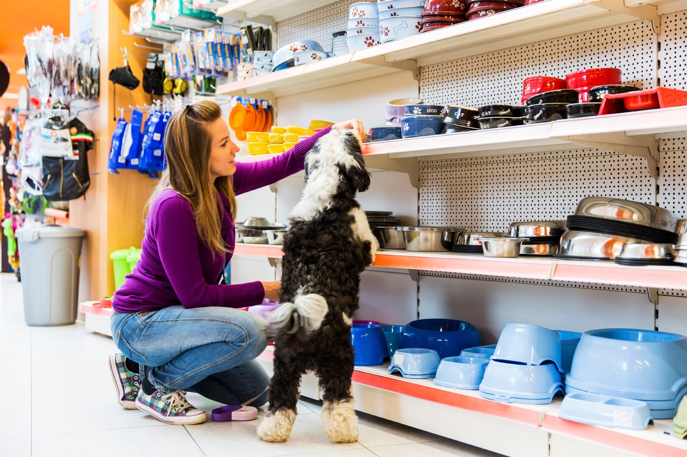
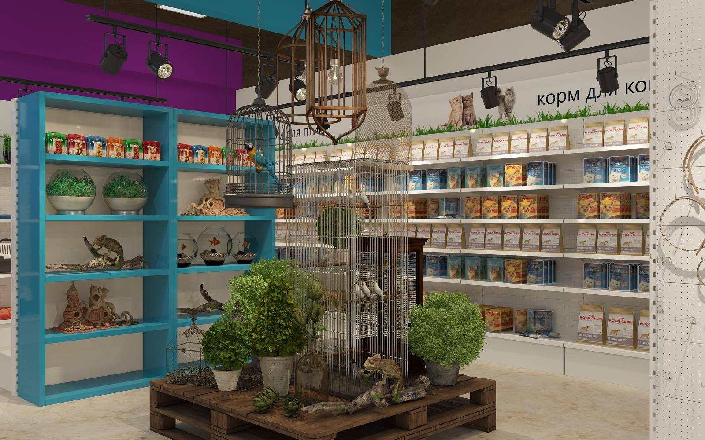
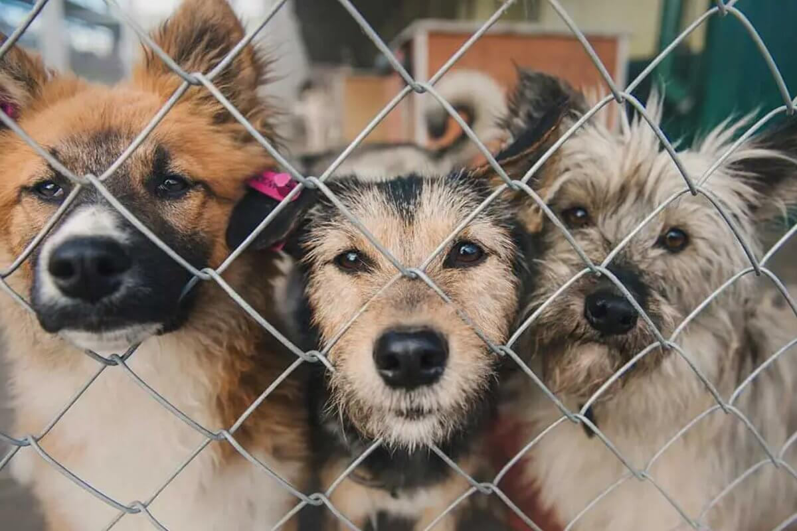
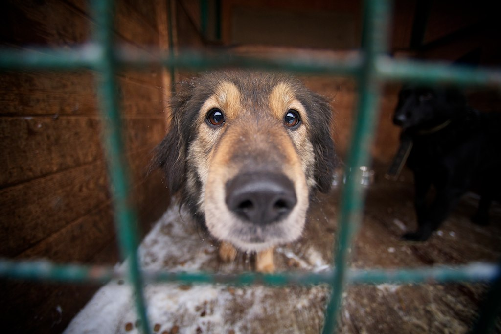
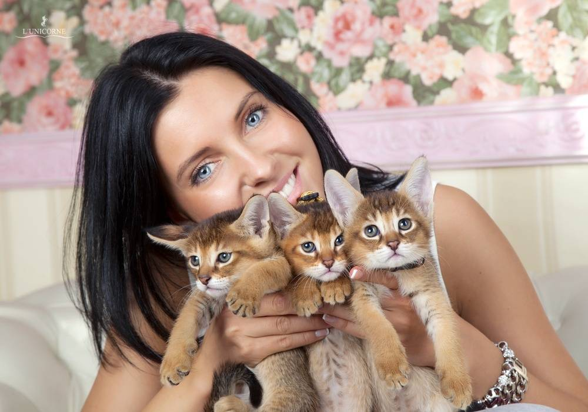
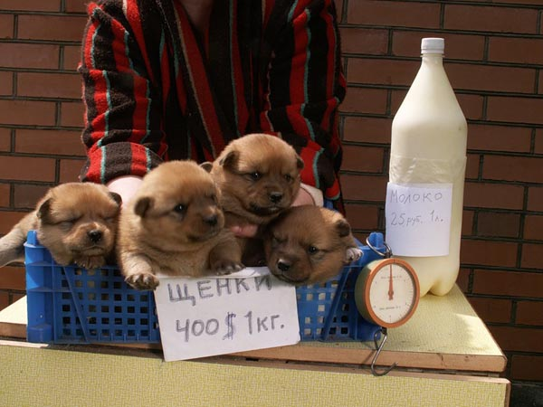
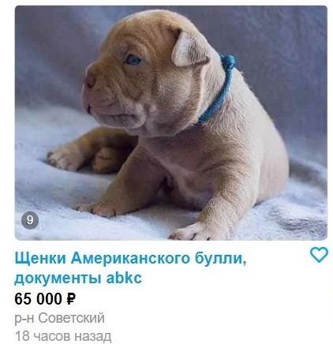
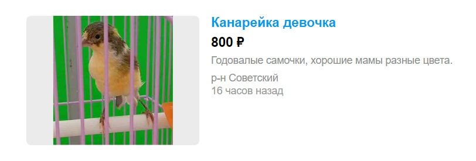
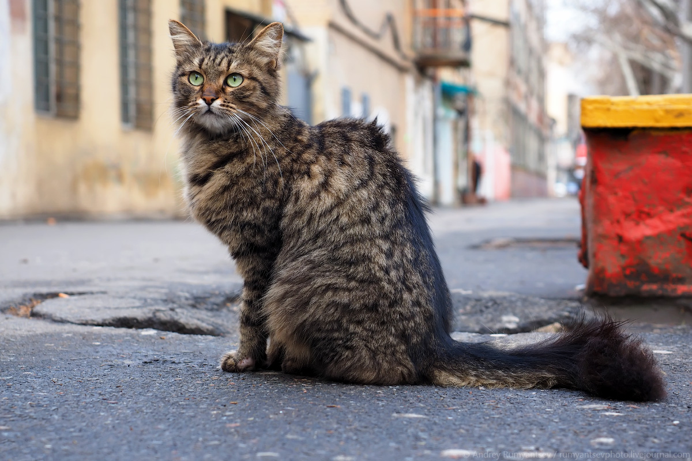
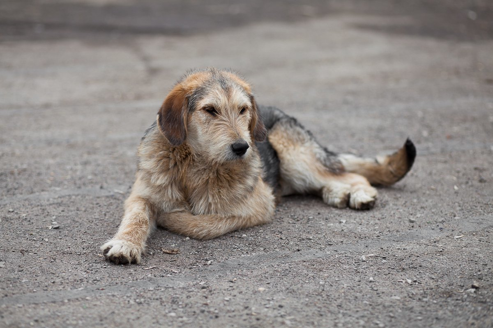

Купить в зоомагазине
 Зоомагазин — магазин для продажи товаров для животных. В зоомагазинах продаётся питание для животных, клетки, аквариумы, различные аксессуары. Также в зоомагазинах иногда продаются аквариумные рыбки, небольшие птицы вроде волнистых попугайчиков, грызуны вроде ручных крыс или хомяков, иногда рептилии — маленькие ящерицы, черепахи и змеи. Продаются также мыши или рыбки, предназначенные на корм домашним рептилиям, насекомые (в том числе кормовые).
Взять из приюта
 Приют для бездомных животных — место содержания бездомных, потерянных или брошенных животных, преимущественно собак и кошек. Приюты являются одной из ключевых составляющих защиты животных и выполняют четыре основных функции: оперативная помощь и забота о животном, включая облегчение страданий посредством ветеринарной помощи или эвтаназии; долгосрочная забота о животном, не нашедшем немедленно старого или нового хозяина; усилия по воссоединению потерянного животного с его прежним хозяином; поиск нового места обитания или нового хозяина для бездомного животного.
Купить у заводчиков
 Заводчик(селекционер) - это специалист по племенному разведению животных, который выборочно разводит тщательно отобранных партнеров, обычно одной и той же породы, чтобы половым путем воспроизвести потомство с определенными, последовательно воспроизводимыми качествами и характеристиками. Это может быть фермер, земледелец или любитель, и может практиковаться в больших или малых масштабах, для удовольствия или прибыли.
Интернет-сервисы для размещения объявлений
 Электронная доска объявлений — сайт, на котором размещаются объявления.Существует множество сайтов с вполне обычными бытовым доскам объявлений или же рекламными газетами. Например:
- Авито
- Юла
- animal.ru
- питомец.ru
Подобрать с улицы
 Беря уличное животное к себе домой, в первую очередь, стоит отвести его к ветеринару и полностью обследовать. При должной любви и заботе какая-то уличная невзрачная собака может стать самым лучшим другом до конца жизни.